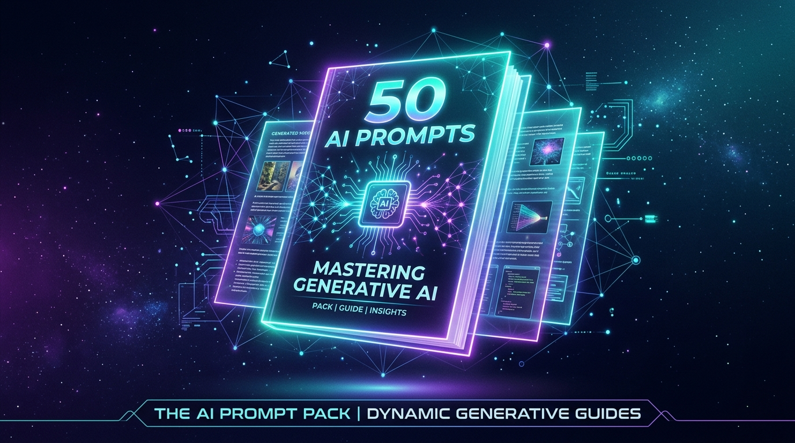
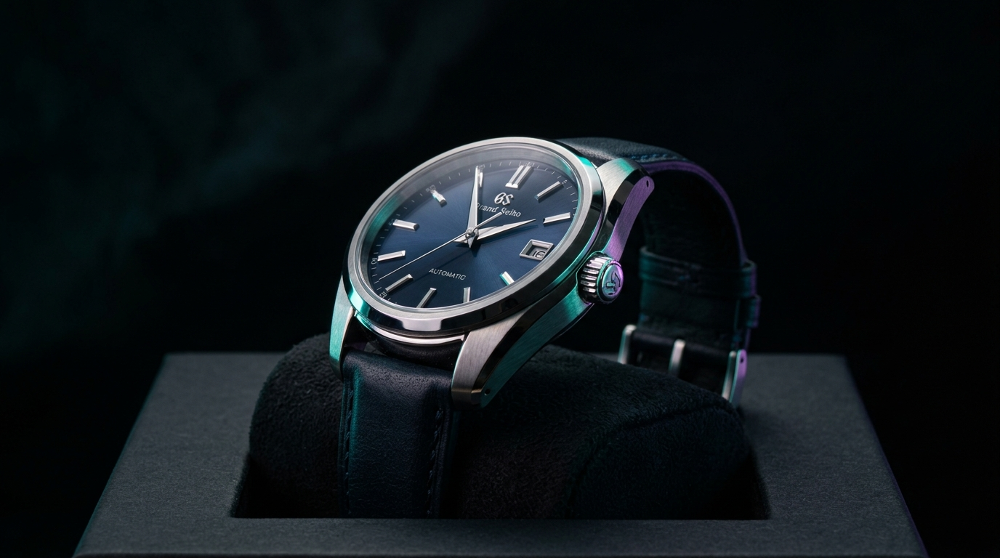
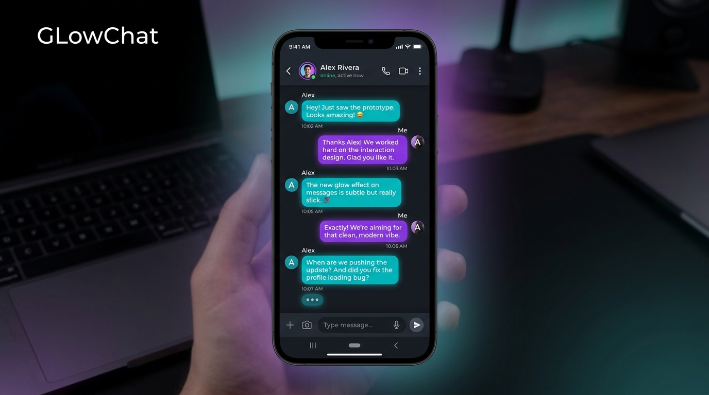

AI Prompt Pack — digital product launch
A self-initiated 50-prompt PDF product for students, sold through a WooCommerce + WordPress storefront I built from scratch — including pricing, listing, and landing-page copy.
A few things I've built and launched — spanning digital products, e-commerce, apps, and blockchain.

A self-initiated 50-prompt PDF product for students, sold through a WooCommerce + WordPress storefront I built from scratch — including pricing, listing, and landing-page copy.

A conversion-focused, one-product landing page for a premium watch concept, built with HTML/CSS using UI/UX principles and brand storytelling to build trust and drive intent.

A full-stack student project: a real-time chat app with a clean, intuitive interface, using AI-assisted tools for code generation to cut development time.
A secure voting dApp built with Solidity and MetaMask supporting 10+ concurrent users, recognised by a faculty panel for smart contract integrity and system robustness.